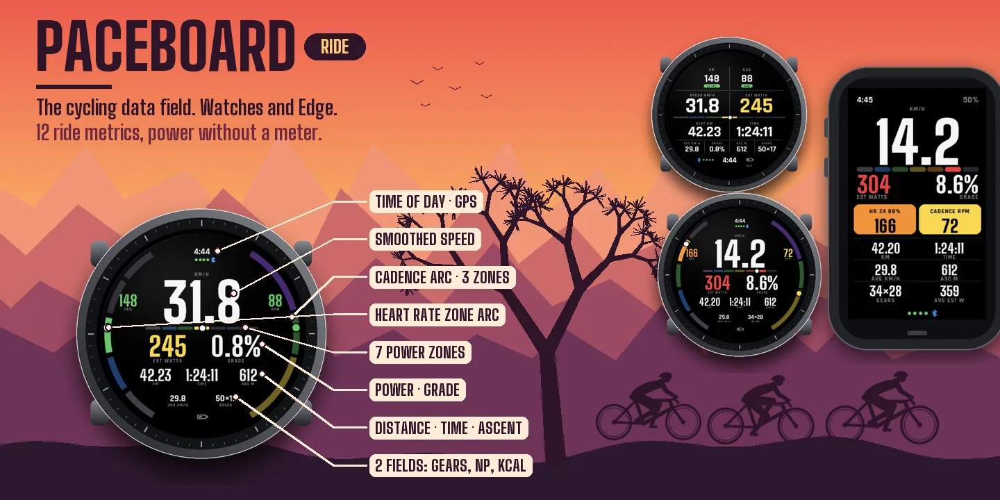
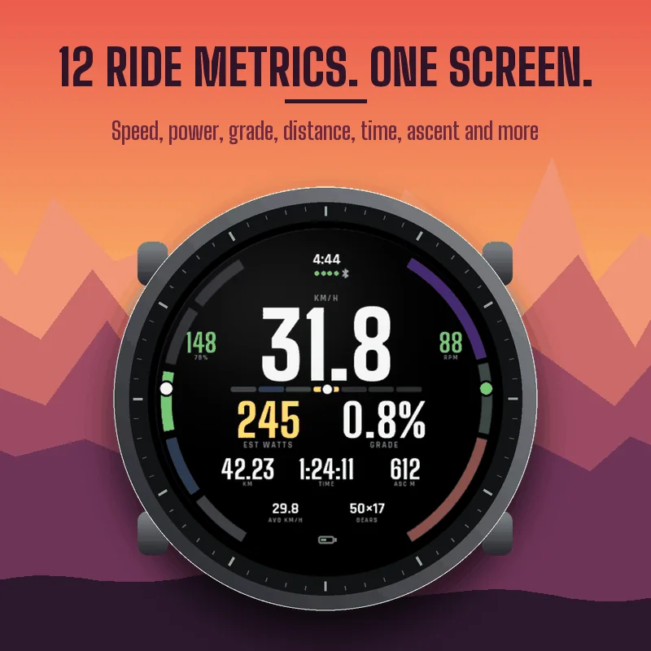
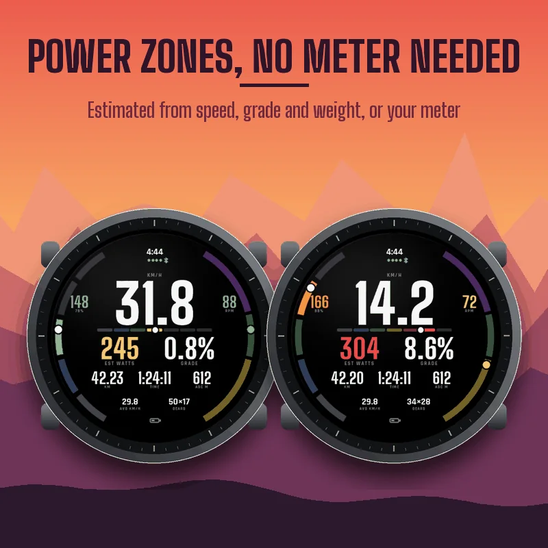
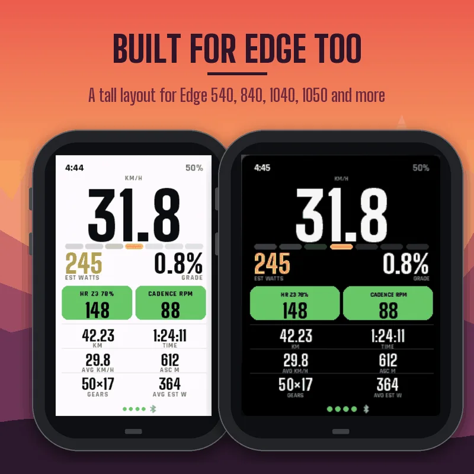
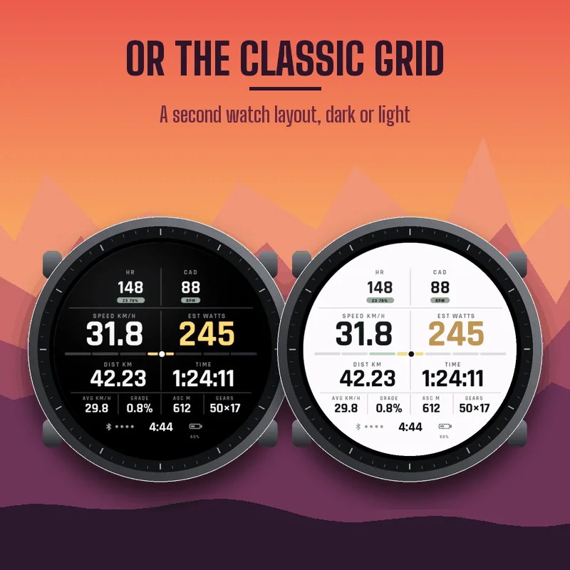
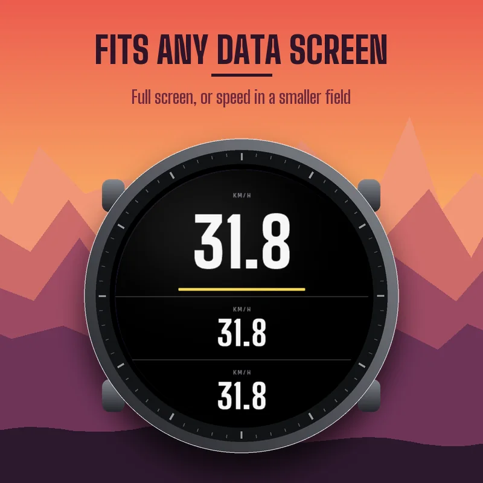

How to add it to your ride
PACEBOARD RIDE is a cycling data field: it lives inside the Bike activity of your watch or Edge. On a watch: press START, choose Bike, hold UP (or open the menu), go to Bike Settings, Data Screens, add or edit a screen, set the layout to 1 field, select the field, open Connect IQ fields, and select PACEBOARD RIDE. On an Edge: open the activity profile, Data Screens, add a page with 1 field and pick PACEBOARD RIDE among the Connect IQ fields. Menu names can differ slightly between devices. If the field does not show up right after installing, restart once.
12 ride metrics on one screen
Smoothed speed, power, power zone, grade, distance, timer, total ascent, heart rate with zone and percent of max, cadence, two fields of your choice, time of day, GPS signal, phone connection and battery. Every number shrinks to fit when it gets longer.
Power, with or without a meter
With a power meter, PACEBOARD RIDE shows your 3-second power. Without one, it estimates your power from speed, grade, your weight, your bike weight, your tires and your riding position, and labels it EST WATTS. An estimate does not know about wind or drafting: use it as a guide. A bar shows your 7 power zones based on the FTP in your Garmin profile (or one you enter), and the number takes the color of its zone.
Your zones at the edge
On watches, in the Halo layout, the left edge shows your heart rate zone and the right edge your cadence in three zones you can set (below 75, 75 to 95, above 95 rpm by default).
Built for edge too
Edge Explore 2, Edge MTB, Edge 540, 840, 550, 850, 1040 and 1050 get a tall layout of their own: huge speed, the power zone bar, power and grade, heart rate and cadence tiles, then distance, time and your fields. In a page with several fields, PACEBOARD RIDE shows your speed in big type.
Gears
On devices that read electronic shifting (Di2, eTap), choose Gears as one of your fields to see your chainring and sprocket, like 50x17.
Settings
On your phone: Garmin Connect, your device, Activities and Apps, Data Fields, PACEBOARD RIDE, Settings. On the device, the Connect IQ field has its own settings menu.
- Layout on watches: Halo or Classic. Background: same as activity, dark or light. Speed smoothing: raw to 30 seconds (3 by default).
- Power: meter then estimate, meter only, or always estimate.
- FTP: from your Garmin profile, or entered.
- Rider weight (or from your profile), bike weight, tires, position.
- Cadence zones. Heart rate zones: Garmin profile, or percent of a max heart rate you enter.
- Fields A and B: average speed, calories, gears, temperature, altitude, average power, normalized power, max speed, average heart rate, average cadence.
- Garmin Connect graphs: on or off.
Graphs in Garmin Connect
When power is estimated, two charts are saved with your ride, estimated power and grade, and the summary gets average, normalized and max estimated power. Turn graphs off if another site does not accept them.
Good to know
Units follow your device settings. Temperature comes from the device sensor (or a paired sensor) and reads warmer on the wrist. If a sensor has no value, the field shows -- rather than a made-up number.
Also for runners
PACEBOARD RUN, the same design for your runs.